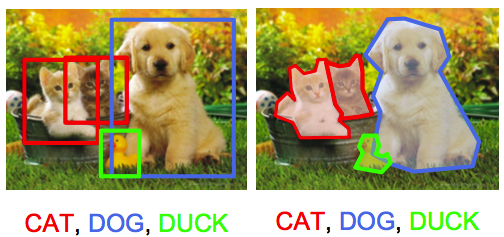

Object Detection for Blood Vessels
Utilizing deep object detection techniques for blood vessel detection in medical image data

Motivation and Goals
The primary objective of our project is to facilitate automatic centerline generation for geometric modeling of the blood vasculature. This integration of advanced object detection techniques with cutting-edge neural networks aims to streamline the blood vessel tracing process. The ultimate goal is to provide accurate geometric models, offering invaluable insights for medical professionals and researchers in comprehending the intricate structure of the human vascular system.
Introduction
Employing state-of-the-art deep learning techniques, we are developing a novel approach to the landscape of blood vessel detection and tracing within complex 3D medical image volumes. This innovative approach utilizes the Mask RCNN neural network, pretrained on the COCO dataset, to achieve unprecedented precision and efficiency.

Methodology
Our methodology focuses on a meticulous analysis of 2D slices extracted from 3D medical image data. By strategically deploying the Mask RCNN neural network, we can precisely identify ‘outlets’ at the boundaries of specific subvolumes within medical images. This strategic detection provides detailed insights into the trajectory of blood vessels, offering a comprehensive understanding of their directionality and identifying critical bifurcation points.
Data Utilization: A pivotal aspect of our project involves the fine-tuning of the Mask RCNN neural network using proprietary data sourced from the Vascular Model Repository. This repository, serving as a rich and diverse dataset, is systematically sliced into thousands of 2D slices. This meticulous process not only refines the neural network’s capabilities but also ensures its adaptability to the nuanced intricacies of blood vessel detection in medical imagery.
Key Components:
-
Mask RCNN Neural Network: Leveraging the power of a pretrained Mask RCNN neural network to enhance accuracy and efficiency in blood vessel detection.
-
Strategic Outlet Detection: Identifying ‘outlets’ at the boundaries of subvolumes for a detailed understanding of blood vessel trajectory and bifurcation points.
-
Fine-tuning with Proprietary Data: Utilizing a diverse dataset from the Vascular Model Repository to fine-tune the neural network, ensuring optimal performance in the specific domain of blood vessel detection.